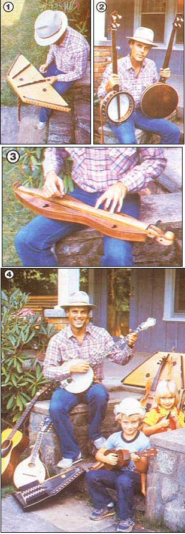

Are you thinking of taking up a folk instrument? Then come along as a well-known mountain musician surveys the pros and cons of the most popular musicmakers.
To me, musical instruments have always seemed more like living beings than inanimate objects. Like people, each has its own personality, peculiarities, limitations, and-of course its own special sound. It takes a while to get to know one, too: Most musicians have to play an instrument for years before they fully realize all that it does or doesn't have to offer them. To help you save some of that time, I've tried to lay out the qualities-good and bad-of the seven most common stringed folk instruments. So, if you're thinking of learning to play folk music, perhaps this article will make your choice of what to play it on a little easier . . . and sounder.
Before we consider specifics, let's talk about learning to play music in general. First of all, I think almost anyone can become a decent musician on almost any instrument. The key factor is . . . interest. That's right, not talent, but interest. I've seen many very naturally skilled people give up playing, while others with only moderate abilities-but a great deal of enthusiasm-keep at it and become good musicians.
So, in choosing your melody-maker, it's important to pick one that inherently fascinates you, one you'll love to hear in good times and in bad. Keep in mind that in the early stages of learning you're going to have to go through screeching and scraping with any stringed instrument . . . so choose one that will keep you involved. (Sounds a lot like a romantic relationship, doesn't it?) Moreover, I think that most folks have a natural ability on certain instruments, while they might have to struggle unnecessarily on others. I know the banjo has always been easiest for me. It feels right in my hands, and it has a sound I never get tired of hearing. In short, I guess I'd have to say that the banjo just makes sense for me. That special, hard-to-describe attraction to a certain instrument comes from within you . . . and makes learning to play it a pleasure.
Besides examining your inner feelings, you might want to look at some of the practical aspects of the different folk instruments. Let's start with the most popular one of all.
THE GUITAR
Along with the piano, the guitar is one of the most versatile instruments ever invented. Almost any style of music can be played on the six-stringer. It can be acoustic or electric and can be used to back up a singer and/or other instruments or for solo "stepping out". And-not the least of its virtues-the guitar can be carried in one hand (which certainly can't be said of the piano!). You never have to worry about outgrowing it, either, because there's always something new to learn. There are lots of good guitarists to listen to for ideas, and plenty of qualified teachers. The guitar is limited only by the creativity of its player.
For the beginner, the guitar can be pleasant to listen to almost from the first day . . . after learning to tune the instrument and play a few basic chords. There are endless numbers of songs you can play and sing along with, even if you know only three chords and a single strum pattern. And you can quickly build your repertoire and technique from that base.
The guitar is also the perfect accompaniment to other stringed instruments, often filling in behind banjo, fiddle, or mandolin. In many cases, it's the "glue" that holds an ensemble together. I believe that anyone who plays any of the many other stringed folk instruments would benefit from knowing the basics of the guitar . . . if for no other reason than to be able to play along with a group by visually following the guitarist's chord changes.
There are only a few drawbacks to learning to play this instrument. Prominent among these is that the strings-especially on a steel-string model-are hard to press down at first. That's no big deal, though. Just keep playing, a little every day, and your fingers will toughen up. The second problem is that everyone seems to play the guitar. Whereas an autoharp player draws "oohs" and "oohs" at the first note from his or her unusual instrument, the average guitarist gets little but yawns. So if you're after attention, you'll have to get good on the guitar: Then you'll get all you need!
The two major styles of guitar playing are flatpick and finger. A flatpick is a small piece of plastic-held between the thumb and first finger-which is used to "pick" individual notes on a string or to strum chords. With the flatpick, you can play a rapid succession of notes . . . and play them with a great deal of force and drive. This style is used in rock, jazz, country, and bluegrass music. For an example of what can be done with this little piece of plastic, listen to an ace acoustic picker like Doc Watson.
Fingerpicking generally, produces a more gentle sound (there are plenty of exceptions, though). In the folk style, a bass-note pattern is maintained with the thumb (with or without the use of a thumbpick), while the melody is played on the "high" strings with the fingers. Listen to Merle Travis or Chet Atkins for prime examples of this graceful style . . . or to the Reverend Gary Davis' recordings to hear full-tilt, finger-picked ragtime and blues.
You'll most likely find that you have a natural inclination toward using a pick or your fingers. Follow that feeling, of course, but be aware that by versing yourself in both styles, you'll greatly expand your musical range.
THE BANJO
There are at least four distinct types of banjos, and more than twice that number of playing styles. But one thing that they all have in common is their lively, upbeat, vibrant sound. Listeners invariably respond with enthusiasm to the banjo. When I first migrated from the plains of Texas to the mountains of the Southeast, I traveled with a talented banjo player named Steve Keith. I can still recall vividly how we'd come into a mountain community as total strangers . . . then Steve would head for a local hangout and cut loose with his old-time banjo. Almost with the first note, the whole town would seem to open up to us. It was like magic! In fact, it was magic. And after I saw it happen a few times, I decided I wanted to be able to do that myself, so I began playing the banjo. (And I must say, it works!)
There are two major types of banjos: five-string and four-string. The five-string is perhaps the best known. One of the nice things about this instrument is that it's generally tuned to an "open" G chord (just strum the unfretted strings, and you get a G), with the fifth (shorter) string acting as a drone. The open tuning also makes picking out melodies relatively easy. The five-string banjo is played in at least three different styles, and the one you choose will almost dictate the kind of music you'll eventually perform.
Bluegrass or three-finger style is the most popular type of banjo playing today. Tunes such as "Foggy Mountain Breakdown", "Dueling Banjos", and the theme from The Beverly Hillbillies have brought this type of banjo music to almost every man, woman, and child in America. In this style, the instrument is played by putting fingerpicks on the thumb, index, and middle fingers of the right hand, and then doing highly syncopated "rolls" on the strings. Bluegrass banjo has an incredible amount of drive and rhythm, but it does not make a good solo style: If you're going to get skilled at it, you'll have to play in company with at least a guitarist or another rhythm player.
The old-time banjo style is sometimes called clawhammer or trailing and is usually played on an open-back instrument. It originated in Africa and was spread throughout America by the minstrel shows of the 1850's. The technique consists of picking down on the strings with the fingernail of the index finger and the side of the thumb. This style of banjo doesn't have the hard-driving, highly syncopated sound of bluegrass, but offers a more laid-back feel. Since it can be played either with chords or with "notey" melodies, it makes a great accompaniment for vocals and other instruments.
Clawhammer style is particularly well suited for rhythms of traditional mountain songs, fiddle tunes, and other types of folk music . . . while it's not easily adapted to jazz, swing, blues, or Irish jigs. If you like authentic mountain music, you should learn this old-time style.
The third of the five-string banjo styles is classical. It gained popularity during the late 1800's and still attracts a good deal of interest, particularly in the Northeast. The classical banjo is strung with nylon or gut strings and is played with all five fingers of the right hand, without the use of picks. Music reading is a must for the classical style, as much of the repertoire is learned from sheet music. You will hear very complex ragtime, classical, and semiclassical pieces in this style, as well as a few popular and newly composed works.
The four-string, or tenor, banjo has a shorter neck than does the five-stringer and is played with a pick. This is the instrument that most people associate with Dixieland and early jazz music. It's also used as a lead instrument in many Irish folk tunes and as a rhythm-maker in old-time string bands. As a lead instrument, the tenor is played in the mandolin style-in which the melody notes are picked individually-or in the chordal style, in which each note of a melody is played with a different chord.
Another type of four-stringer is the plectrum banjo, which has a neck the same length as the five-string instrument, but lacks the fifth string. The playing technique is similar to that used for the tenor, but this banjo is suited less for rhythm and more for lead.
Actually, there are more four-string banjo players in the U.S. than there are five-string pickers (though they seem to get a lot less attention). Tenor and plectrum playing is particularly strong in the Midwest and the West, but you can probably scout up a good teacher in any major city.
THE DULCIMER
The dulcimer has been around for a couple of centuries in the southern Appalachian Mountains, and its popularity has spread until the instrument can be heard almost everywhere in the country today. In its traditional form, the dulcimer has three strings: one to play the melody on, and the other two to act as drones. That makes the old-time style of playing easy to learn and pleasant to hear. All you have to do to play a melody is to move your finger-or a wooden "noter"-up and down a single string on the fretboard. To achieve minor and other modal notes, you merely have to change tunings.
But that's only for the traditional dulcimer style. Today, you can find the instrument with almost any number of strings and being played with a variety of techniques. For example, melodies and chords are sometimes played on all the strings, rather than just one. Folks are performing all kinds of music on dulcimers these days, too . . . from folk and popular to classical and jazz.
One of the foremost drawbacks to the dulcimer is that it's a quiet instrument (though to many aficionados, this intimacy is an asset ). It's also difficult to play the dulcimer in just any old key, or to play complicated passages . . . because the instrument wasn't designed for that type of music. But people are working around these limitations, and are producing some beautiful, complex music in addition to traditional-style tunes.
THE HAMMERED DULCIMER
Over the last ten years or so, this ancient instrument has been enjoying a fervent nationwide revival. Most people fall in love with the hammered dulcimer the first time they hear it. There are increasing numbers of devotees who build and play the hammered dulcimer, and interest just seems to keep on growing.
This trapezoidal dulcimer is played by tapping on its strings with small wooden hammers. In its simplest form, the instrument has a single bridge that divides the multitude of strings running across its face. The arrangement gives a different note on each side of the bridge, the two being separated by a fifth interval. To give the instrument its characteristic full sound, two to four strings are grouped together and tuned to the same note. This grouping is called a course, with most hammered dulcimers having from 12 to 14 of them. Most modern instruments of this type also have a second, bass, bridge for an additional 14 (lower) notes.
That makes for a lot of strings to tune. But that's not impossible-especially with the help of today's electronic tuning devices-and the beautiful sound of a well tuned hammered dulcimer makes it worth the trouble several times over.
The hammered dulcimer is diatonic (that is, it includes a scale with five full tones and two semitones) in certain keys, usually A, D, G, and C. And since most folk tunes are played in exactly those four keys, the hammered dulcimer is perfect for traditional music. You can hear all types of melodies being tapped out on this instrument nowadays, including fiddle tunes, ragtime, classical, and even some pop and swing.
Despite all those strings, the hammered dulcimer is easier to play-in some ways-than other stringed instruments. For instance, since your wrists do most of the work, you don't have to spend years learning to use the intricate muscles of your fingers. The bad news is that you have to be precise. There's almost no way to cover up a mistake . . . it just rings on and on. It's also difficult to see where you are as you bounce your hammers rapidly across the strings, but this gets easier with practice.
The hammered dulcimer is primarily a lead instrument. While you can play chords by hitting two to four strings at a time, the instrument certainly isn't the best for accompanying others. And, since you can't "slide" into notes, you can't put much blues into tunes played on this musicmaker.
Another thing that you should be aware of is that other musicians sometimes come to, well, resent hammered dulcimer players. There are at least two reasons for this. The first is something akin to artistic jealousy. Your fellow players may have worked for years to develop their instrumental style, and hardly anyone notices. But let a hammered dulcimer player just give a ping, ping, ping on his or her strings, and a crowd will begin to gather. (Of course, this problem is simultaneously one of the assets of the hammered dulcimer.) In addition, it can be dominating . . . almost dictating the style the other musicians in the band must play. Obviously, though, both of these drawbacks can be minimized if you simply use diplomacy.
THE AUTOHARP
Here's an instrument that was invented with ease of playing in mind: All you need to do to get a chord is to push a button and strum the strings! With a minimum of practice, then, you can master a guitarlike strum and be ready to accompany singing. It's even easy on your fingers when you're learning to play. And if you play the harp while holding it upright, you then learn to keep the strum going with your thumb and to pick out simple melodies with your index and middle fingers.
The autoharp produces a sweet, full sound, and is best used to accompany singing or to play melodies with a moderate tempo. However, it usually offers only a given number of chords. Also, the technique of playing is somewhat restricted, so it's hard to run off fast passages of eighth or sixteenth notes. But for most people, it's the tuning of those 36 strings that's the real nemesis . . . and accurate tuning is critical to the quality of autoharp music. But again, you can call on a pitch pipe or an electronic tuning device to help you out.
THE FIDDLE
Call it fiddle or violin . . . it's basically the same instrument: The real distinction is the style in which it's played. Many musicians feel that the fiddle is the king of acoustic instruments . . . the most difficult to play, and capable of the greatest range of tone and feeling. There are almost no limits to the types of music it can play. True, the fiddle's not much of an instrument for accompanying solo singing or for sounding full chords, but other than that, you can do almost anything on it.
The very things that make the fiddle difficult to play are the attributes that give the instrument its expressive range. To begin with, the fingerboard has no frets. That means you have to put your fingers down in precisely the right place each time to get a clean note, and that takes a lot of practice. But the advantage of not having frets is that you can slide into or out of notes, which is part of the reason the fiddle is such a great jazz and blues tool.
While the left-handed, fret less-fretting technique may sound difficult, it's really the bowing that makes the instrument unique, wonderful ... and maddening. When drawn steadily across the strings, the bow can make the fiddle sing in beautiful, rich tones. Or, with short, quick strokes, it can spit out notes at lightning speed. But in the hands of the beginner, the bow only squawks, requiring nerves of steel to get through the early stages of learning (and a great deal of patience from your family and friends). You can get the hang of it, though, if you just keep trying.
The bowing technique is the primary thing distinguishing the folk fiddle from the classical violin. In fiddling, a loose wrist is essential . . . whereas a classical violinist generally uses a stiffer technique. (That's why classically trained violinists often sound so stiff when they try to fiddle.) The two styles aren't mutually exclusive, you just have to practice both. Certainly, some classical training can help any fiddler get better intonation and tone.
If ever there was an instrument that you couldn't learn halfheartedly, it's this one. You've got to have a passionate interest in learning to play the fiddle to keep at it long enough to make it sing. But what a joy when it does!
THE MANDOLIN
The mandolin is tuned like the fiddle: in fifths, which makes it "logical" (that is, the next note up or down the scale will always be right where you expect it to be). Unlike its musical cousin, though, the mandolin has double strings and is played with a pick, giving the instrument a bright, lively sound with very little "sustain". It's also capable of producing the full range of chords. And, because the instrument has frets, you can play it with your left hand more easily than you can the fiddle (though its double strings are harder to press down at first).
The mandolin can play melodies or serve as an excellent rhythm instrument. Because it lacks a full bass tonal range, though, it's not a great soloist. But even with just a single guitar for backup, the little gem is superb for almost any style of folk music.
As is the case with playing most instruments, it's the picking hand that takes the most work. For the mandolin to sound its best, you have to play rapidly, accurately, and forcefully . . . not an easy task on such a small instrument. [EDITOR'S NOTE: A MOTHER staffer who's been a happily struggling mandolin player for over a year reports that he's still learning to playtremolo . . . that fast, single-note fluttering that's such a distinctive part of the instrument's sound.] But once you've got the basics, the mandolin can make music that's sweet and simple, hard and driving, or wild and jazzy.
CODA
People often ask how long it will take to master a certain instrument. Well, the only answer is . . . a lifetime, of course! That's part of the joy of music. But figure on taking a year to get over the initial hump . . . to get the basics in hand and reach a point where you have some control over the instrument.
To make that happen, you'll have to practice a little (or a lot) each day. Keep at it! Look on practice as a meditation, a chance to concentrate. In no time you'll begin to see (and hear) real progress. Ongoing learning is half the fun of playing, and you'll never regret the time spent with your instrument. It'll become a friend for life.
EDITOR'S NOTE: David Holt has an album-"It just Suits Me"-that features mountain music on old-time banjo, hammered dulcimer, harmonica, guitar, and (really!) paper bag. You can order the album for $9.50 postpaid from High Windy Records, Dept. TMEN, Box 553, Fairview, North Carolina 28730 . . . or write for his free catalog.
If you'd like some good reading to help you along the musical road, look into Marc Bristol's 144-page book, Homegrown Music, which is packed with lessons for guitar, dulcimer, and lots of other folk instruments, along with instructions for making instruments yourself. Homegrown Music (Madrona, $8.95) is available from Mother's Bookshelf (restricted) , 105 Stoney Mountain Road, Hendersonville, North Carolina 28791 for the list price plus $1.25 shipping and handling.
|
 [1] A hammered dulcimer. [2] Claw-hammer (left) and bluegrass (right) banjos. [3] The lap dulcimer. [4] Go ahead . . . pick one! |
|
|